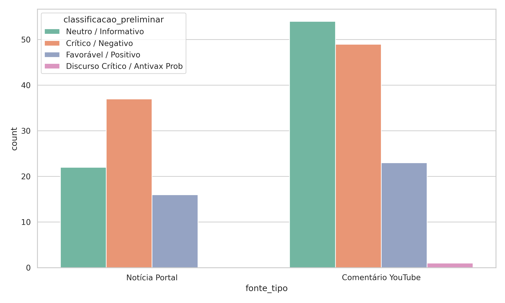
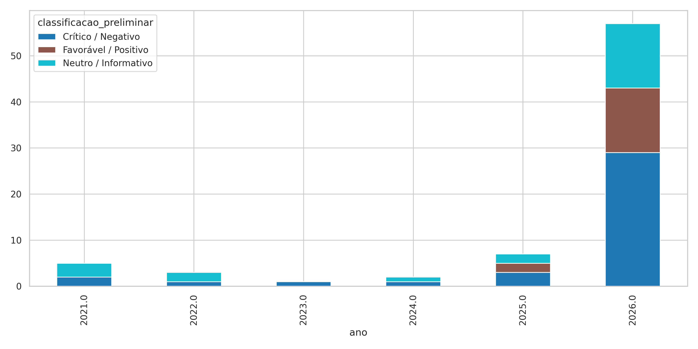
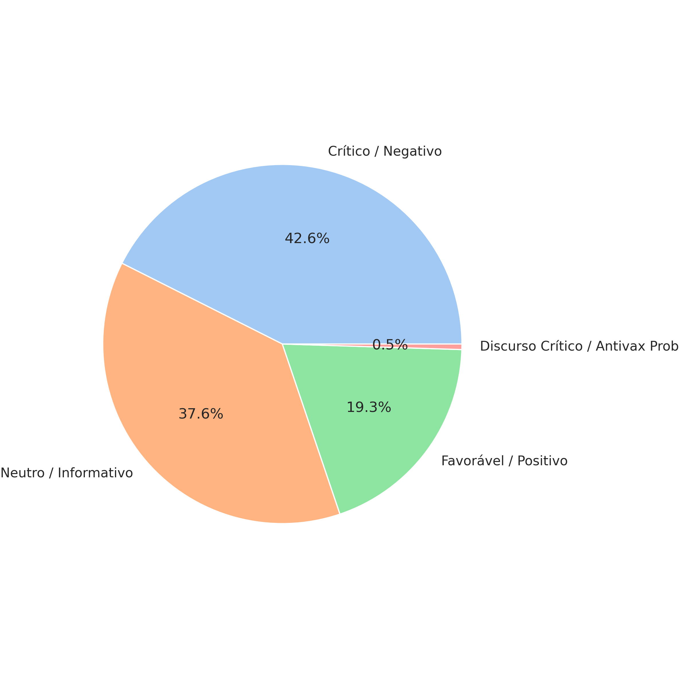

Resumo temporariamente indisponível devido a alta demanda no servidor.
Resumo temporariamente indisponível devido a alta demanda no servidor.



A razão, felizmente, prevalece - Estadão
Nesta quarta, Terminal Gentileza recebe campanha de vacinação contra influenza e caxumba - Diário do Rio
Procura por vacinação: influenza é a mais procurada; Covid-19 pediátrica tem baixa procura - G1
Petrolina faz Dia D de vacinação contra poliomielite nesta sexta - G1
Vacinação contra a dengue: São José alerta para importância da segunda dose - Prefeitura Municipal De São José
Curso fortalece políticas de imunização no Brasil - Jornal UFG
Equipes que atuam nas Salas de Vacinação das UBSs de Erechim passam por treinamento - Jornal Bom Dia
Aprovação da primeira vacina de mRNA contra a gripe nos EUA é bom sinal para o aprimoramento dos medicamentos do futuro - Terra
Rio amplia vacinação contra a Covid para idosos a partir de 60 anos nesta quarta-feira - G1
Trump assina ordem que reduz vacinas recomendadas para crianças - G1
VACINAS NOS EUA 💉 | Trump anuncia mudanças nas recomendações de vacinação infantil nos EUA, reduzindo a lista de vacinas consideradas essenciais. A decisão ocorre em meio ao pior surto de sarampo no país em 35 anos e é criticada por especialist - instagram.com
Multivacinação: Cuiabá terá Dia D com vacinas contra HPV, meningite, gripe e outras doenças - Prefeitura de Cuiabá
Sem base científica, Trump cita autismo e ‘risco de morte’ ao reduzir vacinação infantil; veja o que dizem especialistas - G1
Sarampo: buscas pela doença no Google explodem 910% em meio a surto no Brasil; veja as 10 principais dúvidas - oglobo.globo.com
Trump avança na ofensiva contra vacinas para crianças - DW.com
Vacinação antirrábica continua com pontos em bairros de Dourados - Dourados News
Vacinação infantil: Trump assina decreto para alterar imunização com vacina tríplice viral - BBC
Governo de SP alerta para o alto contágio do sarampo; conheça os sintomas e veja onde se vacinar - agenciasp.sp.gov.br
OMS rebate Trump e diz que mudanças na vacinação infantil nos EUA vai contra a ciência - Rádio Itatiaia
O que decreto de Trump sobre vacinação infantil prevê e o que dizem os médicos - UOL Notícias